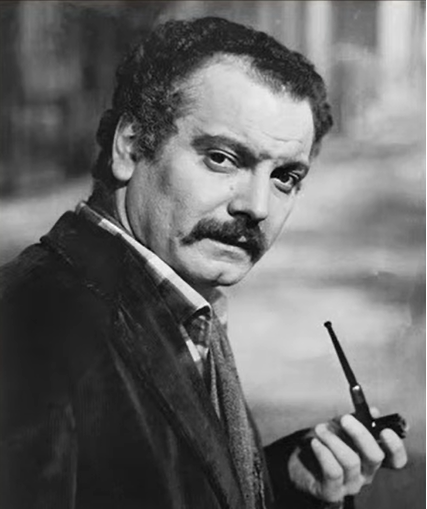

P... de toi
Tramp that you were
Georges Brassens (1954)
|
|
Explication donnée par David Yendley sur son blog (http://dbarf.blogspot.fr/2012/05/alphabetical-list-of-my-brassens-songs.html) (La présente traduction anglaise chantable s'appuie sur sa traduction en prose):
Les biographes de Brassens mentionnent une certaine Jo avec qui il eut une laisison passionnée de juin 1945 à août 1946. Ils nous apprennent que Jo n'avait que dix-sept ans lorsqu'elle fit irruption dans son existence. Dans la chanson, Brassens parle de "ses vingt ans", mais c'est là sans doute une licence poétique. Il devait prendre garde à ne pas se faire prendre par sa maîtresse, Jeanne, chez qui il habitait, Impasse Florimont. Jo était ravissante et dénuée de toute moralité. Le côté bohème de Brassens s'accordait bien, au début, avec son attitude existentielle délurée et sa liberté de moeurs. Hélas, si le refus de tout engagement envers la société était divertissant, le même principe était vite intenable dans une relation personnelle et il fut à l'origine de bien des déboires dans la vie du poète. En l'occurrence, il conduisit à la rupture.
Explanation borrowed from David Yendley's blog (http://dbarf.blogspot.fr/2012/05/alphabetical-list-of-my-brassens-songs.html) (The present singable English translation is derived from from his prose translation):
Some of Brassens biographers talk of a girl called Jo, with whom Brassens had a passionate relationship from June 1945 until August 1946. They tell us that Jo was only seventeen when she made her dramatic entry into his life - in the song Brassens talks of her twenty years but that will be poetic licence. He had to be careful not to be caught by his mistress, Jeanne, in whose house he was living in the Impasse Florimont. Jo was stunning to look at and totally amoral. Brassens bohemian character was attracted by her devil-may-care attitude to life and the liberality of her love. Unfortunately the irresponsibility, which was amusing when applied to the society around them, became unacceptable within a personal relationship and she brought a lot of turmoil into his life. This led to the break-up.
|
 Brassens chante "P... de toi" |